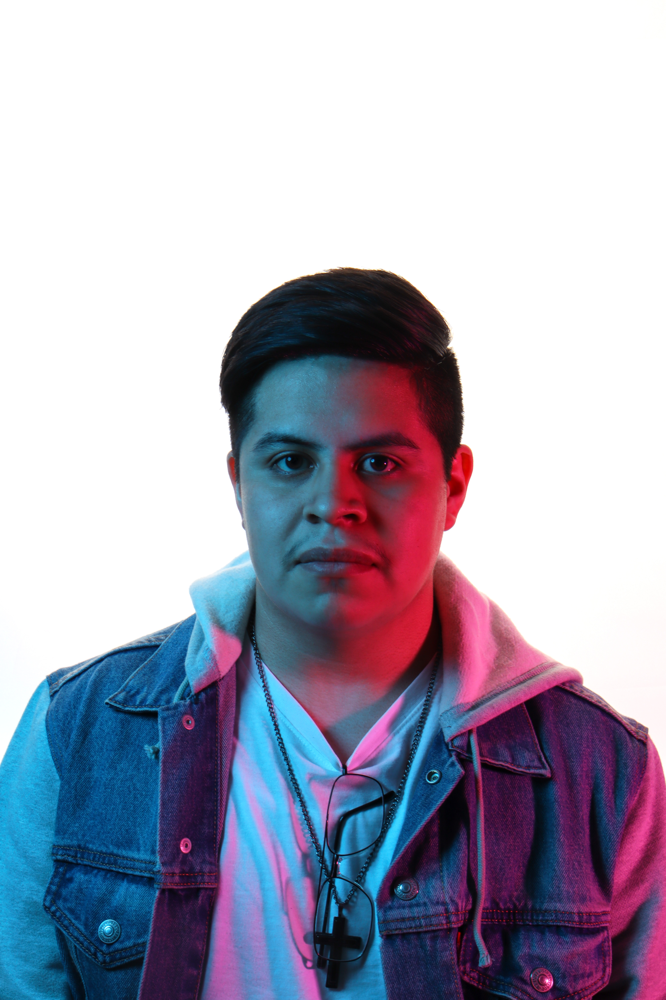
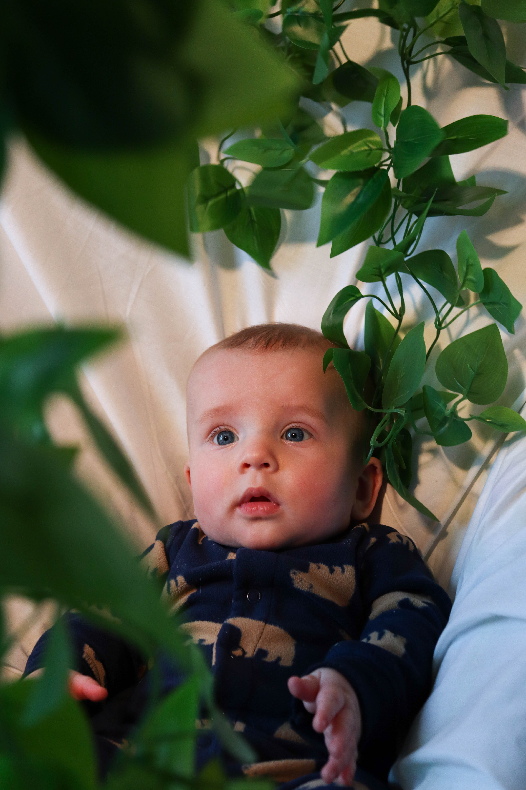

Portrait Photography
Created for ART 233 – Studio Lighting at Black Hawk College, these images explore professional studio lighting through a variety of portrait techniques, including focused directional lighting and the use of colored gels to shape mood and visual interest. I planned and executed each shoot by selecting lighting modifiers, positioning lights, directing the subjects, and refining composition to achieve the intended artistic effect. Throughout the project, I developed a strong understanding of light quality, color theory, exposure, and portrait composition.


